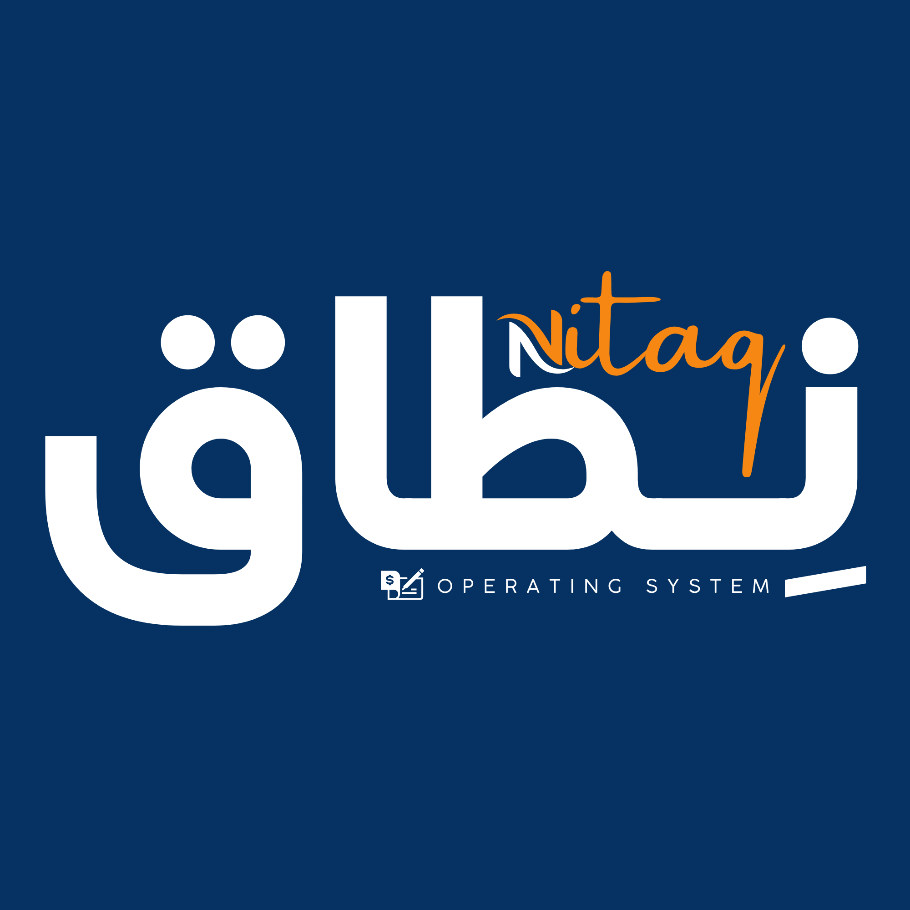

من نحن
نِطاق مطور من جهة تقنية واضحة، لا من قالب مجهول.
الهدف من نِطاق هو بناء نظام يخدم التشغيل الحقيقي للمتاجر والسوبر ماركت، مع واجهة عربية حديثة ودعم فني مفهوم وسهل الوصول.
I.TECHتحليل أعمالERP / SAPأنظمة مخصصة
الهدف من نِطاق هو بناء نظام يخدم التشغيل الحقيقي للمتاجر والسوبر ماركت، مع واجهة عربية حديثة ودعم فني مفهوم وسهل الوصول.
الهوية البرمجية والدعم الفني لنِطاق مقدمان من مكتب I.TECH.
شريككم التقني والعلمي الموثوق. مكتب يطور حلولًا عملية للأفراد والشركات ويركز على ربط التشغيل اليومي بالحلول الرقمية الواضحة.

تعريف مختصر بالشخصية المهنية المطورة للنظام.
محلل أنظمة ومطور تطبيقات من الرمادي - الأنبار - العراق. خبرته تجمع بين تحليل الأعمال، بناء الأنظمة المخصصة، إدارة التشغيل، وإعداد التقارير.
تجد قنوات الاتصال الرسمية لطلب النظام والاستفسار عن التهيئة والتفعيل والدعم الفني المباشر.